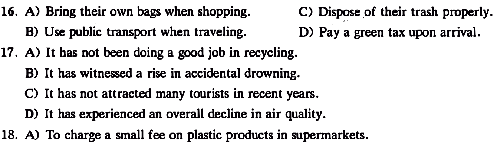
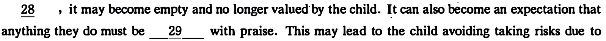
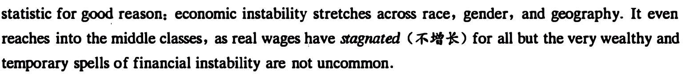
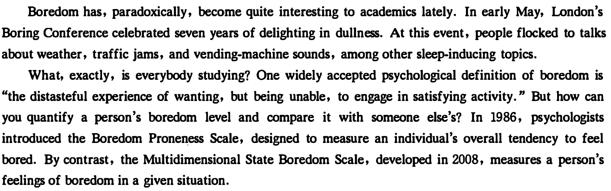

Part I Writing ( 30 minutes)
Directions: For this part, you are allowed 80 minutes to write on the topic Changes in the Way of Transportation. You should wr:ite at least 120 wonds but no more than 180 wa-ds.
Part ll Listening Comprehension ( 25 minutes)
Section A
Directions: In this section, yo.u will hear three news reports. At the end of each news report, you w.ill hear two or three questions. Both the news report and the questions will be spoken only once. After you hear a question , you m.ust choo-.w! the best answer from the four choices marked A) , B) , 'C) and D) . Then mark the corresponding letter on Answer Sheet 1 with a single line through the centre.
Questions 1 and 2 are based on the news report you have Just heanl.
1.
2.
Questions 3 and 4 are based on the news report yo11 have Just heanl
3.
4.
Questions S to 7 are based on the news report you have Just heard.
5.
6.
7.
本页部分文字层异常，已保留原图文字区域；这些区域随窗口缩放，暂不能重新换行或复制。
Section B
Directions: In this section, )OU will hear two long conversations. At the,end of each conver:sation, )OU will hear four que.stions. Both the conver:sation and the questions will be spoken only once. After you hear a question, you must choose the best answer from the four choices marked A), B), C) and D). Then mark the ro"esponding letter on Answer Sheet 1 with a single line through the centre.
Questions 8 to 11 are based on the conversation you have Just heard.
8.
9.
10.
. '
Questions 12 to 15 are based on the conversatim you have just heard.
12.
13.
15.
Section C
Directions: In this section , )OU w.ill hear thnee JXlssages. At the end of each passage , you will hear three or four questions. Both the passage and the questions will be spoken only once. After )'lU hear a question , )OU must choose the best answer from the four choices marked A ) , B ) , C ) and D ) . Then mark the co"esponding letter on Answer Sheet 1 with a single line through the centre .
Questions 16 to 18 are based on the p1m&ge you have just heard.

16.
17.
18.
本页部分文字层异常，已保留原图文字区域；这些区域随窗口缩放，暂不能重新换行或复制。
Questions 19 to 21 are based on the passage you have just heard.
19.
Questions 22 to 25 are based on the passage you have just heard.
22.
23.
24.
25.
Part ]I[ Reading Comprehension ( 40 minutes)
Section A
Directions: In this section, there is a passage with ten blanks. You are required to select one word for each blank from a list of choices given in a word bank following the passage. Read the passage through carefully before making )VUr choices. Each choice in the bank is identified by a letter. Please mark the corresponding letter for each item on Answe,r Sheet 2· with a single line through the centre. You may not ll.l? any of the words in the bank more than once.
When my son completes a task, I can't help but praise him. It's only natural to give praise where
praise is due, right? But is there ·such a thing as too much praise?
' praise as much as
According to psychologist Katherine Phillip, children don't-benefit from 26
we'd like to think. " Parents' often praise, believing they are building their child's self-confidence. However, over-praising can have a 27 effect," says Phillip. " When we use the same praise

' .
Does this mean we should do away with all the praise? Phillip says no. "The key to healthy praise is to focus on the process rather than the 31 . It is the recognition of a child's attempt, or the process in
the risks needed to learn and grow. "
So how do we break the 32 of praise we're all so accustomed to? Phillip says it's important to

someone is. It's a form of personal approval. Process praise is acknowledgement of the efforts the person has just----35 . Children who receive person praise are more likely to feel shame after losing," ·says Phillip.
本页部分文字层异常，已保留原图文字区域；这些区域随窗口缩放，暂不能重新换行或复制。
Section B
Directions: In this section, yo;u are going to read a passage with ten· statements aitached to it. Each statement contains information given in o.ne of the paragraphs. Identify the paragraph from which the information is derived. You may choose a paragraph· more than once. Each paragraph is marked with a letter. Answer the questions by marking the cor.esponding • letter on Answer Sheet 2.
Poverty is a story about us, not them
A) Too often still, we think we know what poverty looks like. 'It's the way we've been taught, the images we've been force-fed for decades. The chronically hoineless. The undocumented immigrant. The l urban poor, usually personified as a woman of color, the "welfare queen" politicians stil too often reference.
B) But as income inequality rises to record levels in the United States, even in the midst of a record economic expansion, those familiar images are outdated, hurtful, and counterproductive to focusing attention on solutions and building ladders of opportunity.
C) Today's faces of income inequality and lack of opportunity- look like all of us. It's Anna Landre, a disabled Georgetown University student fighting to keep health benefits that allow her the freedom to live her life. It's Tiffanie Standard, a counselor for young women of color in·Philadelphia·who want to be tech entrepreneurs-but who must work multiple jobs to·stay afloat. It's Ken Outlaw, a welder in rural North Carolina whose dream of going back to school at a local community college was dashed by Hurricane Florence-just one of' the extreme weather events that have tipped the balance for struggling Americans across the nation.
D) If these are the central characters of our story about poverty, what layers of perceptions, myths, and realities must we unearth to find meaningful solutions and support? In pursuit of revealing this complicated reality, Mothering Justice, led by women of color, went last year to the·state capital in Lansing, Michigan, to lobby on issues that affect working mothers. One of the Mothering Justice organizers went to the office of a state representative to talk about the lack of affordable childcare the vestiges of a system that expected mothers to stay home with their children while their husbands worked. A legislative staffer dismissed the activist's concerns, telling her "my husband took care of that-I stayed home."
E) That comment, says Mothering Justice director Danielle Atkinson, '"was meant to shame" and relied on the familiar notion that a woman of color concerned about income inequality and programs that promote mobility must by definition be a-single· morn, probably with multiple kids. In this case, the Mothering Justice activist happened to be married. And in ·most cases in the America of 2019, the images that come to mind when we hear the words poverty or income nequality fail miserably in
本页部分文字层异常，已保留原图文字区域；这些区域随窗口缩放，暂不能重新换行或复制。
reflecting a complicated reality: poverty touches virtually all of us. The face of income inequality, for all but a very few of us, is the one we each see in the mirror.
' ' 38 million people in the U. S. are living below the official poverty thresholds. Taking into account economic need beyond that absolute measure, the Institute for Policy Studies found that 140 million people are poor or low-income. That's almost half the U.S. population.
G) Whatever the measure, within that massive group, poverty is extremely diverse. We know that some people are more affected than others, like children, the elderly, people with disabilities, and people of color.
H) But the fact that 4 in 10 ;Americans can't come up with $.400 in an emergency is a commonly cited

I) Negative images remain of who is living in poverty as well as what is needed to move out of it. The big American myth is that yoµ can pull yourself up by your own efforts and change a bad situation into a good one. The reality is that finding opportunity without help from families, friends, schools, and community is virtually impossible. And the playing field is nothing close to level.
J) The Frame Works Institute, a research group that focuses on public framing of issues, has studied what
and well being in life as a product 9f choice, willpower, and drive," says Nat Kendall-Taylor, CEO of Frame Works. "When we see people who are struggling," he says, those assumptions ''lead us to the perception that. people in poverty are lazy, they don't care, and they haven't made the right decisions. "
K) Does this sound familiar? Similar i<leas surround poverty in the U . S .. And these assumptions give a false picture of reality. " When people enter into that pattern of thinking," says Kendall-Taylor, " it's cognitively comfortable to make sense of issues of poverty in that way. It creates a kind of cognitive blindness-all of the factors external to a person's drive and choices that they've made become invisible I and fade from view. "
L) Those ex.temal factors include the difficulties accompanying low-wage work or structural discrimination based on race, gender, or ability. Assumptions get worse when people who are poor use government benefits to help them surviye. There is a great tension between "the poor" and those who are receiving what has become a dirty word: "welfare. "
M) According to the General Social Sqrvey, 71 percent of respondents believe the country is spending too ·little on "assistance to the. poor/' On the other hand, 22 percent think we are spending too little on "welfare": 37 percent -believe we are spending too much.
N) " Poverty has been interchangeable with people of color-specifically black women and black mothers," says Atkinson of Mothering Justice. It's true that black mothers are more affected by poverty than many other groups, yet they are. disproportionately the face of poverty. For example, Americans routinely overestimate the share of black recipients-of public assistance programs.
0) In reality, most people. will experience some form of financial hardship at some point in their lives.
Indeed, people tendto.dip in and out of poverty, perhaps due to unexpected obstacles like losing a job,
本页部分文字层异常，已保留原图文字区域；这些区域随窗口缩放，暂不能重新换行或复制。
or when hours of a low-wage job fluctuate. P) Something each of us can do is to treat each other with the dignity and sympathy that is deserved and to understand deeply that the issue of poverty touches all of us.
36. One legislative staffer assumed that a woman of color who advocated affordable childcare must be a single mother.
37. People from different races, _genders, and regions all suffer from a lack of financial security.
38. According to a survey, while the majority believe too little assistance is given to the poor, more than a third believe too much is spent on welfare.
39. A research group has found that Americans who are struggling are -thought to be lazy and to have made the wrong decisions.
40. Under the old system in America, a mother was supposed to stay home and take care of her children.
41. It was found that nearly 50% of Americans are poor or receive low pay.
42. Americans usually overestimate the number of blacks receiving welfare benefits.
43. It is impossible for Americans to lift themselves out of poverty entirely on their own.
44. Nowadays, it seems none of us can get away from income inequality.
45. Assumptions about poor people become even more negative when-they live on welfare.
Section C
stltements. For each of them there are foo.r choices marked A), B), C) and D). You should decide on the best choice and mark the corresponding letter on Answer Sheet 2 with a single line through the centre.
Passage One
Questions 46 to SO are based on the following passage.
Boredom has, paradoxically, become quite interesting to academics lately. In early May, London's Boring Conference celebrated seven years of delighting in dullness. At this event, people flocked to talks
about weather, traffic jams, and vending-machine sounds, among other sleep-inducing topics.
What, exactly, is everybody studying? One widely accepted psychological definition of boredom is "the distasteful experience of wanting, but being unable, to engage in satisfying activity." But how can you quantify a person's boredom level and compare it with someone else's? In 1986, psychologists

bored. By contrast, the Multidimensional State Boredom Scale, developed in 2008, measures a person's feelings of boredom in a given situation.
Boredom has been linked to behavior issues including inattentive driving, mindless snac;:king, excessive drinking, and addictive gambling. In fact, many of us would choose pain over boredom. One team of psychologists discovered that two-thirds of men and a quarter of women would rather self-administer electric sbocks than sit alone with their thoughts for 15 minutes. R_esearching this phenomenon, another team asked volunteers to watch boring, sad, or neutral films, during which they could self-administer electric shocks. The bored volunteers shocked • themselves more and harder than the sad or neutral ones did.
But boredom isn't all bad. By encouraging self-reflection and daydreaming, it can spur creativity. An early study gave participants abundant time to complete problem-solving and word-association exercises. Once all the obvious answers were exhausted, participants gave more and more inventive answers to
本页部分文字层异常，已保留原图文字区域；这些区域随窗口缩放，暂不能重新换行或复制。
combat boredom. A British study took these findings one step further, asking subjects to complete a creative challenge (coming up with a list of alternative uses for a household item). One group of subjects did a boring activity first, while the others went straight to the creative task. Those whose boredom pumps had been primed were more productive.
In our always-connected world, boredom may be a hard-to-define state, but it is a fertile one. Watch paint dry or water boil, or at least put away your smartphone for a while, and you might unlock your next big idea.
46. When are people likely to experience boredom, according to an accepted psychological definition?
47. What does the author say boredom can lead to?
48. What is the finding of one team of psychologists in their experiment?
49. Why does the author say boredom isn't all bad?
50. What does the author suggest one do when faced with a challenging problem?
Passage Two
Questions 51 to 55 are based on the following pas.g1ge.
Forests in countries like Brazil and the Congo get a lot of attention· from environmentalists, and it is easy to see why. South America and sub-Saharan Africa are experiencing deforestation on an enormous scale: every year almost 5 million hectares are lost. But forests are also changing in rich Western countries. They are growing larger, both in the sense that they occupy more land and that the trees in
Forests are spreading in almost all Western countries, with the fastest growth in places that historically had rather few trees. In 1990 28% of Spain was forested; now the proportion is 37%. In both Greece and Italy, the growth was from 26% to 32% over the same period. Forests are gradually taking more land in America and Australia. Perhaps most astonishing is the trend in Ireland. Roughly 1% of that country was forested when it became independent in 1922. Now forests cover 11 % of the land, and the government wants to push the proportion to 18% by the 2040s.
Two things are fertilising this ·growth. The first is the abandonment of farmland, especially in high, dry places where nothing grows terribly well. When farmers give up trying to earn a living from farming or herding, trees simply move in; The second is government policy and subsidy. Throughout history,
本页部分文字层异常，已保留原图文字区域；这些区域随窗口缩放，暂不能重新换行或复制。
governments have protected and promoted forests for diverse reasons, ranging from the need for wooden warships to a desire to promote suburban house-building. Nowadays forests are increasingly welcome because they suck in carbon pollution from the air. The justifications change; the desire for more trees remains constant.
The greening of the West does not delight everyone. Farmers complain that land is being taken out of use by generously subsidised tree plantations. Parts of Spain and Portugal suffer from terrible forest fires. Others simply dislike the appearance of forests planted in neat rows. They will have to get used to the trees, however. The growth of Western forests seems almost as unstoppable as deforestation elsewhere.
51. What is catching environmentalists' attention nowadays?
52. Which countries have the fastest forest growth?
53. What has encouraged forest growth historically?
54. What accounts for our increasing desire for forests?
55. What does the author conclude about the prospects of forestation?
Part N Translation ( 30 minutes)
Directions: For this pari, ,vu are allowed 80 minutes to translate a passage from Chinese into E:nglish. You should write ,our answer on Answer Sheet 2.